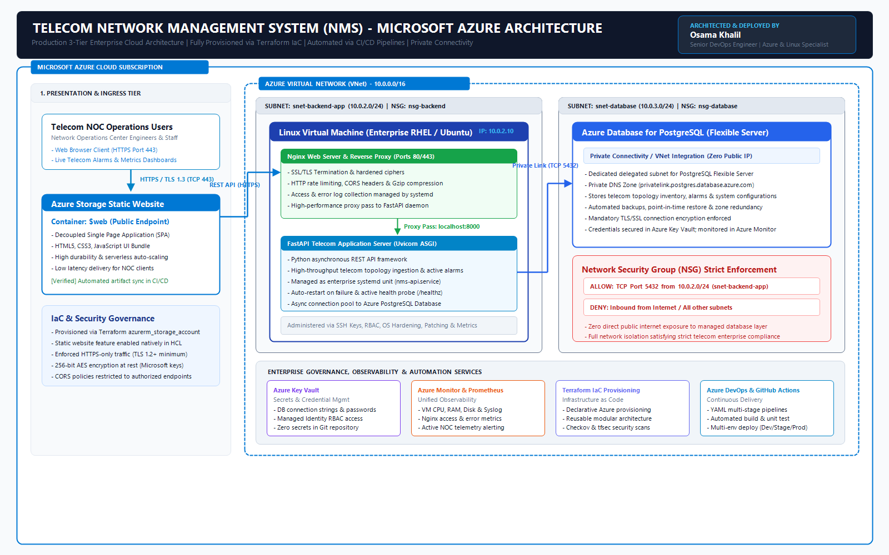
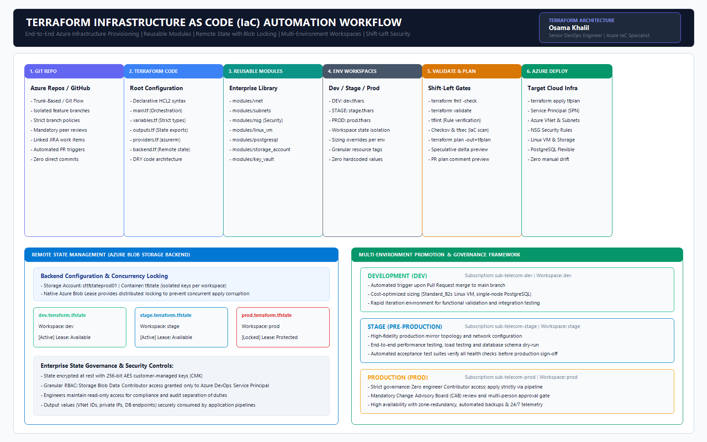
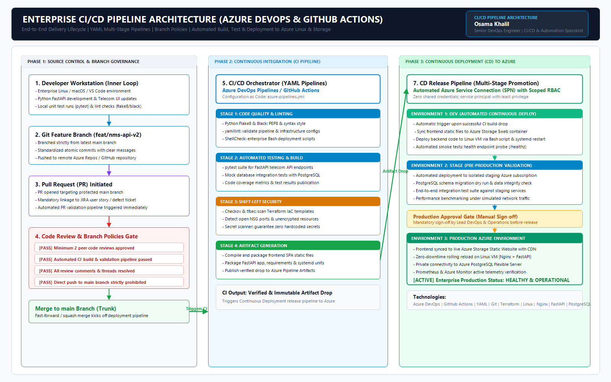
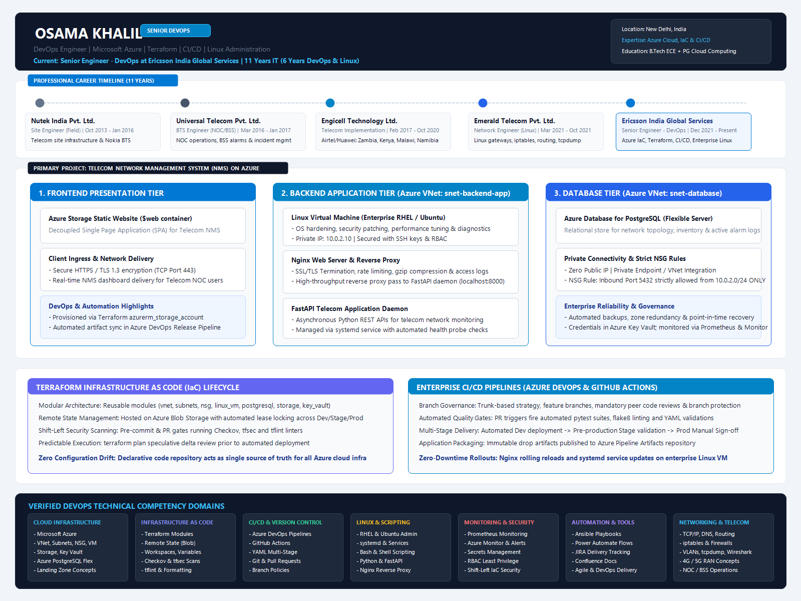

Engineering Resilient
Azure Cloud Platforms
& Automated CI/CD.
Architecting Resilient Cloud Infrastructure & Continuous Automation
Combining 11 years of mission-critical systems engineering with modern Azure cloud automation
I am a Senior DevOps Engineer at Edexcel Global India, previously with Ericsson India Global Services, where I architect, automate, and govern enterprise cloud environments on Microsoft Azure.
My professional journey began in enterprise telecommunications and carrier network operations, where I spent 5+ years commissioning, optimizing, and troubleshooting critical cellular infrastructure across India and Africa (Airtel & Huawei projects in Zambia, Kenya, Malawi, and Namibia). This provided me with a deep, instinctive understanding of Layer 2–4 networking, TCP/IP, IP routing, packet analysis, and high-availability systems.
Over the last 6 years, I transitioned this deep infrastructure foundation into DevOps Engineering and Cloud Solution Architecture. Today, I lead infrastructure automation using Terraform reusable child modules, design multi-stage YAML pipelines in Azure DevOps and GitHub Actions, administer hardened Linux virtual environments, and implement shift-left security (Checkov, TFSec, Trivy, SonarQube).
I believe in clean, immutable infrastructure where everything—from virtual networks and private endpoints to monitoring alerts—is versioned in Git and verified through automated validation gates.
Modular Infrastructure as Code
Developing reusable Terraform child modules with for_each, maps, and dynamic blocks. Remote state locking on Azure Storage prevents race conditions across environments.
Automated Multi-Stage CI/CD
Building zero-downtime YAML pipelines in Azure DevOps and GitHub Actions with branch protection, PR code reviews, artifact drop versioning, and canary rollouts.
Shift-Left DevSecOps
Enforcing automated security gates into pull requests using Checkov, TFSec, Bandit SAST, Trivy container analysis, and TruffleHog secrets scanning.
Enterprise Linux & Networking
Advanced RHEL/Ubuntu administration, systemd daemons, Nginx reverse proxies, 802.3ad LACP bonding, iptables firewalls, and tcpdump/Wireshark packet diagnostics.
Battle-Tested Skills & Toolchain
Comprehensive technical competencies developed across 11 years of mission-critical engineering
Microsoft Azure
Primary cloud architecture platform for enterprise landing zones and microservices.
Terraform & IaC
Declarative infrastructure automation, modular design, and state management.
CI/CD & Version Control
Continuous integration, release governance, and branch protection.
Containers & Kubernetes
Application containerization, registry management, and cluster deployment.
Security & DevSecOps
Shift-left compliance, secret scanning, and vulnerability mitigation.
Linux & Scripting
Deep operating system configuration, service lifecycle, and shell automation.
Monitoring & Observability
Proactive telemetry, distributed tracing, and automated alerting systems.
Telecom & Networking
Carrier-grade Layer 2–4 networking and cellular radio access systems.
Career Progression & Leadership
11 years delivering infrastructure stability, cloud automation, and high-availability operations
Senior DevOps Engineer
Leading cloud infrastructure architecture, Terraform IaC automation, Azure DevOps multi-stage CI/CD pipelines, and cloud governance for enterprise workloads.
Core Responsibilities & Deliverables:
- Azure Infrastructure Architecture: Architected and deployed highly resilient Azure cloud topologies following Microsoft Cloud Adoption Framework (CAF) and Landing Zone standards (Hub-Spoke VNet, Private Endpoints, NSG micro-segmentation).
- Terraform Reusable Modules: Designed and maintained production-grade Terraform child modules using advanced HCL constructs (
for_each, maps, dynamic blocks) with centralized remote state locking in Azure Blob Storage. - Azure DevOps Multi-Stage Pipelines: Built end-to-end multi-stage YAML pipelines incorporating automated linting, test execution, artifact drop staging, and environment gates across Dev, Stage, and Production.
- Infrastructure Security Scanning: Enforced automated shift-left security audits directly inside pull request workflows using Checkov, TFSec, Trivy, and SonarQube, blocking insecure configurations prior to deployment.
- Monitoring, Backup & Disaster Recovery: Implemented comprehensive Azure Monitor, Log Analytics, and Prometheus monitoring with proactive alerting rules, geo-redundant backups, and disaster recovery strategies.
- Cloud Governance & Cost Optimization: Formulated Azure Policy enforcement, role-based access control (RBAC) least-privilege permissions, and FinOps resource tagging to optimize monthly cloud expenditure.
- Cross-Functional Collaboration: Partnered closely with software development, QA, security, and operations teams to accelerate feature delivery cycles, enforce Git branch policies, and reduce Mean Time to Resolution (MTTR).
Senior Engineer – DevOps
- Designed, provisioned, and maintained Azure cloud infrastructure using Terraform with reusable modules and remote state management across Dev, Stage, and Prod environments.
- Managed Git-based source control and code review workflows; automated build, validation, and deployment processes through CI/CD pipelines using Azure DevOps and GitHub Actions.
- Administered and troubleshot enterprise Linux servers (RHEL/Ubuntu), including performance tuning, OS patching, user access management (SSH/RBAC), and network diagnostics.
- Automated recurring engineering and operations tasks using Bash scripting and Power Automate, reducing manual effort and improving turnaround time for maintenance activities.
- Collaborated with cross-functional teams, tracked delivery progress in JIRA, and applied security and compliance checks (Checkov/tfsec) to infrastructure-as-code.
Network Engineer (Linux) – Project
- Configured and administered Linux-based network servers and gateways, managing IP routing, firewall rules (iptables), and interface bonding to maintain high network availability.
- Performed end-to-end connectivity troubleshooting and deep-packet diagnostics using tcpdump and Wireshark to resolve critical network bottlenecks between on-premises systems and telecom interfaces.
- Created and maintained network configuration documentation, system baselines, firewall policies, and change records for operational consistency.
Telecom Implementation Engineer (Africa Region)
- Delivered telecom network implementation and integration for Airtel across four African countries (Zambia, Kenya, Malawi, and Namibia) on Huawei cellular platforms.
- Performed commissioning, testing, optimization, and fault resolution, coordinating with customer and vendor engineering teams both on-site and remotely.
- Configured systems and integrated new base station equipment into live commercial networks; supported new cell-site turn-up, integration, and RF optimization.
BTS Engineer (NOC / BSS)
- Monitored and maintained the telecom network from the 24/7 NOC, handling real-time alarms, incident resolution, and Base Station Subsystem (BSS) operations.
- Performed first-level troubleshooting of BSS issues, escalating complex problems to specialized support teams with clear, detailed incident logs.
- Maintained shift handover reports to guarantee 100% operational visibility and meet strict uptime SLAs.
Site Engineer (Field)
- Executed field installation, commissioning, and maintenance of telecommunications site infrastructure.
- Performed BTS and microwave integration, commissioning, and RF troubleshooting activities.
- Tested, commissioned, and integrated Nokia ODU/IDU equipment (FIU, FXC RRI, FXC E1/T1, Ultra Site BTS) and microwave links; performed VSWR testing and Site Acceptance Testing (SAT).
Production Cloud Systems & IaC Repositories
Real-world production architectures, automated codebases, and toolkits built to enterprise standards
Telecom Network Management System (NMS) on Azure
Resilient 3-tier cloud architecture designed to ingest real-time 4G/5G cell site telemetry and alarms across regional hubs. Built with an Azure Storage Static Website frontend, a FastAPI application behind Nginx reverse proxy on an isolated Linux VM, and an Azure Database for PostgreSQL Flexible Server with private VNet integration.
- Decoupled frontend hosted on serverless Azure Storage (
$web) with TLS 1.3. - Linux VM application backend managed via hardened systemd unit (
nms-api.service). - Strict private database connectivity with zero public endpoint exposure.
Terraform Azure Enterprise Reusable Modules
A comprehensive library of production-grade Terraform child modules engineered with for_each, map structures, and dynamic blocks. Standardizes provisioning of VNets, subnets, NSGs, Linux VMs, Key Vaults, and PostgreSQL Flexible Servers across Dev, Stage, and Prod environments.
- Centralized remote state locking in Azure Blob Storage preventing race conditions.
- Dynamic blocks for security rules, SSH admin keys, and storage network ACLs.
- Verified against Checkov and TFLint for zero high-risk compliance findings.
Enterprise CI/CD Pipelines & Security Gates
Multi-stage YAML deployment pipelines in Azure DevOps and GitHub Actions. Enforces strict Git branch policies, Flake8 linting, Bandit SAST security scans, Pytest matrix execution with coverage publication, Checkov IaC policy audits, and multi-environment promotions.
- Pull Request branch policies requiring green CI tests before merging to main.
- Multi-environment promotion pipeline with manual approvals for Production.
- Automated post-deploy smoke test scripts and zero-downtime rollback handlers.
Carrier-Grade Linux Telecom Automation Toolkit
Production-proven Linux systems engineering and network automation toolkit. Includes automated 802.3ad LACP bonding, 802.1Q VLAN trunking, rotating packet captures for 3GPP protocols (GTP-U, Diameter, SIP), SNMP trap ingestion daemon, and Prometheus RAN KPI exporter.
- High-availability LACP link aggregation across physical network interfaces.
- Asynchronous SNMP trap receiver forwarding faults to REST endpoints.
- Self-healing systemd watchdog script with crash-loop prevention.
Azure Landing Zone & Cloud Governance Automation
Architecture and provisioning blueprint for scalable Microsoft Azure enterprise landing zones. Implements Hub-Spoke virtual networks, centralized peering, Azure Firewall, custom RBAC roles, Azure Policy enforcement (CIS Benchmarks), and FinOps cost optimization dashboards.
- Hub-and-spoke topology with centralized inspection and transit routing.
- Automated Azure Policy auditing for encryption-at-rest and private endpoints.
- Cost anomaly detection and budget alerts integrated with Slack/Teams webhooks.
Cloud Blueprints & Engineering Workflows
Production technical diagrams aligned with actual resume experience and enterprise standards

$web) with global CDN delivery and TLS 1.3 encryption.
snet-backend-app (`10.0.2.0/24`). Hardened systemd service running FastAPI under Uvicorn with Nginx reverse proxy handling SSL termination and rate limiting.
snet-database (`10.0.3.0/24`). Zero public IP exposure; private VNet integration and NSG rules restrict Port 5432 to backend VM.


for_each and dynamic blocks.
sttfstateprod01/tfstate) with lease-based locking preventing concurrency corruption.
terraform fmt, terraform validate, tflint, and Checkov/tfsec security audits.





Academic Foundation & Continuous Learning
Formal engineering education complemented by advanced cloud computing certifications
Post Graduate Program in Cloud Computing
Specialized postgraduate curriculum covering Enterprise Cloud Solution Architecture on Microsoft Azure, Infrastructure as Code with Terraform, Distributed Container Systems, and Cloud Security Governance.
B. Tech in Electronics & Communication Engineering
Four-year rigorous engineering program establishing deep fundamentals in Telecommunication Systems, Computer Networking (TCP/IP), Signal Processing, Microprocessors, and Operating Systems.
Cloud Architecture & DevOps Practice
Extensive hands-on professional application in Azure Solutions Architect design patterns, HashiCorp Terraform modular development, Azure DevOps CI/CD administration, and Linux enterprise security.
Let's Build Scalable Cloud Systems Together
Currently open to Senior DevOps Engineer, Cloud Solutions Architect, and Platform Engineering roles.
Send a Direct Inquiry
Have an engineering challenge or an open leadership role? Send me a message directly.